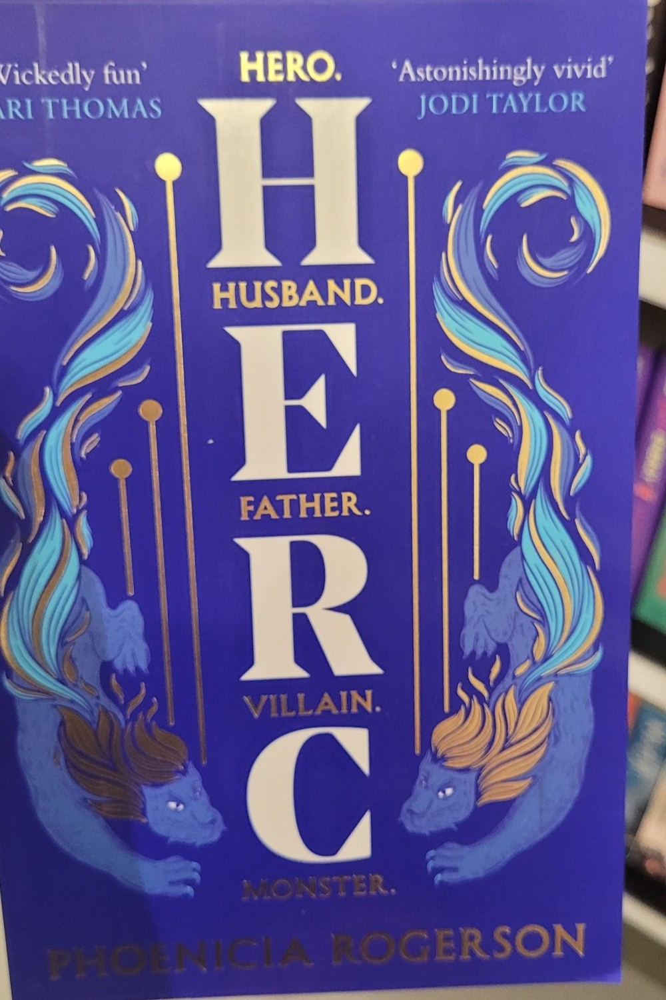
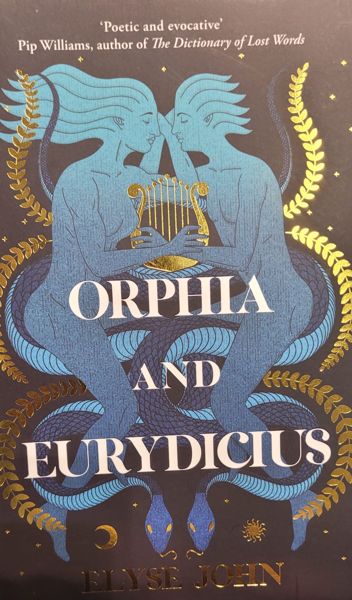

MY LIBRARY
Welcome to the personal library of Masa

Organizing my bookshelf
I have always had trouble with organizing my bookshelves in a way that makes sense but looks appealing as well. Here are some tips on how you can make your books less lonely on the shelves :P
You can place and houseplants among the books and decorative items. A small table lamp or fairylights also adds to the atmosphere.
You can arrange the books in different directions. Use horizontal stacks of books to break up long rows and add character.
Recently finished books
Muumipapan urotyöt by Jansson, Tove
Muumipapan muistelmat kertovat huimista seikkailuista ennen elämää Muumilaaksossa.
Muumipapan muistelmissa tutusta perheenisästä kuoriutuu seikkailija, joka jo nuorena ottaa kohtalon omiin käpäliinsä karkaamalla löytölasten kodista. Kaihomielisesti ja reippaasti värittäen Muumipappa muistelee aikoja, jolloin hän ja Nuuskamuikkusen ja Nipsun isät elivät myrskyisää nuoruuttaan: seikkailuretkiä joita toverukset tekivät Merenhuiskeella, pelottavaa Hemulin tätiä jonka tahmatassut pyyhkäisivät mennessään, arkajalkaista ja äreää drontti Edvardia, Laittomien siirtokuntaa, kauhujen saaren kummitusta - ja sitä unohtumatonta syysyötä, jolloin Muumipappa pelasti suloisen haaksirikkoutuneen Muumimamman meren armoilta.
Masa
Just me, myself and I, exploring the universe of written word. I have been interested in reading since I was a young child. I was probably like 9 or 10 years old when I was introduced to the world of Harry Potter and I've been hooked on reading ever since. Now I want to share my view of this amazing world with all of you.
Book reviews
-

Herc
Rogerson, Phoenicia -

Orphia and Eurydicius
John, Elyse -
 Percy Jackson and the Lightning thief
Percy Jackson and the Lightning thief
Riordan, Rick
Tags
LGBTQ Romance Horror Non-fiction YA Fantasy True crime Mystery/thriller Poetry Self-help Science fiction Classics Children Folklore